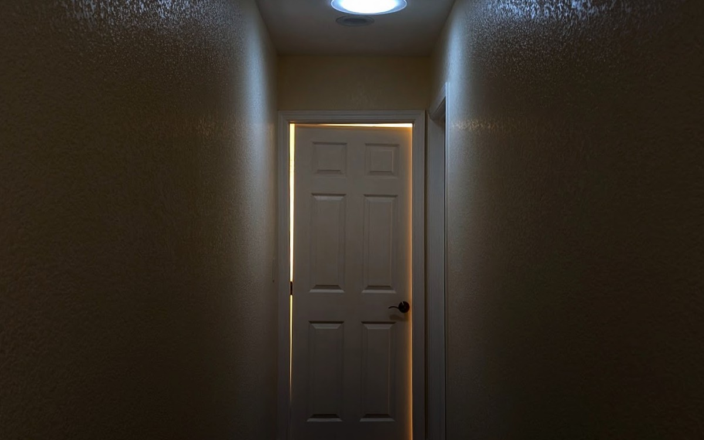
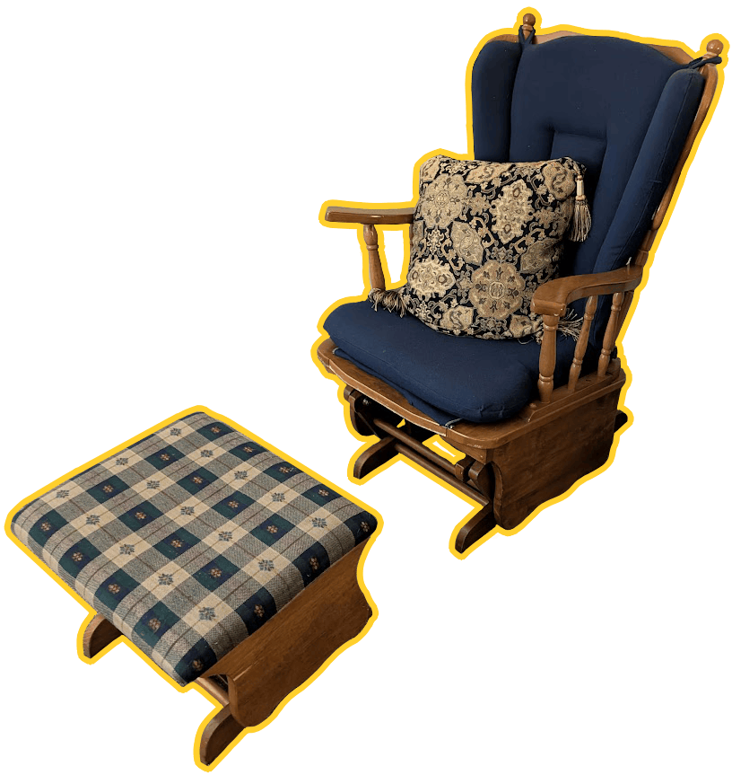
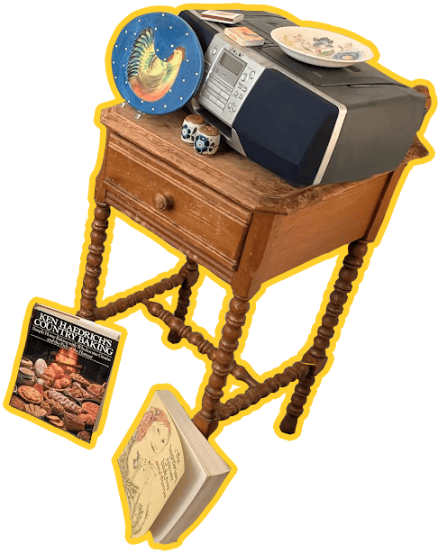
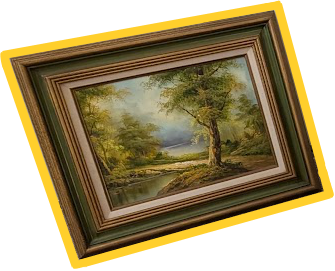
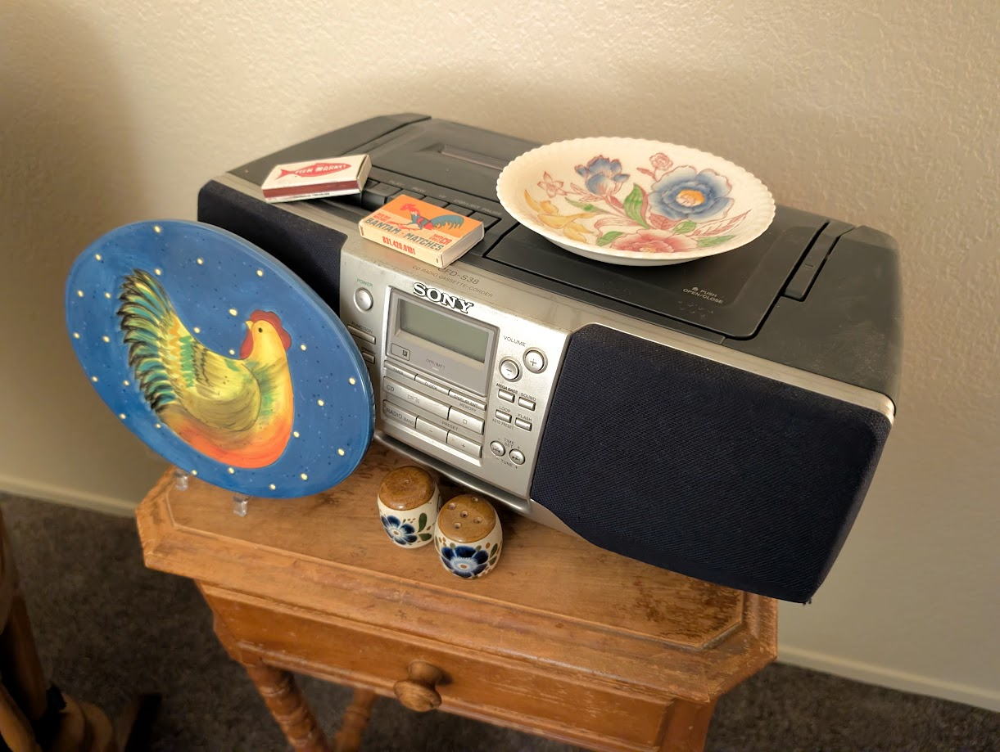
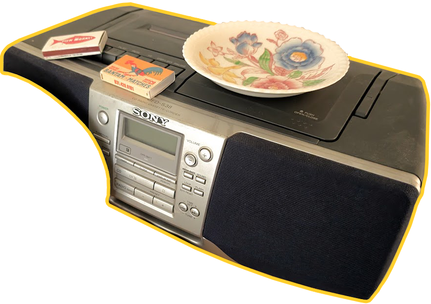
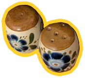
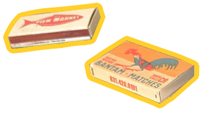
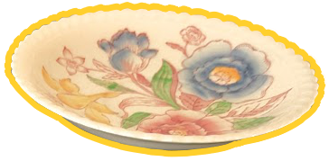

Why do secondhand objects seem to have a soul of their own? Why do these objects seem to draw me in, accentuating my life, as opposed to buying something new to breathe fresh life into?
.
.
.
Wouldn't you like to know more of the relics of a time now past, understand their worth to me, and what they can mean to you?




Glider chair (c. 1970s)
I picked up this glider alongside the nightstand from an estate sale. Sitting in a glider brings a sense of comfort; we used to have one when I was little, and I distinctly recall my mother using it to rock my younger siblings to sleep. It's nice to sit in this chair when reading or using my laptop, and in a way, it seems to slow time down. The glider and ottoman actually aren't part of the same set (but seem to share a manufacturer), as I've found researching it online; however, I like the contrast of fabric. This glider has a lot of sentimental value to the woman who sold it to me; she grew up with it in her home, and I hope to continue keeping it in the same good condition.
Nightstand (c. 1930s)
This nightstand, picked up alongside the glider at an estate sale, fits in perfectly with the theme of the little nook I made in my room. While worn from almost a century of use, I plan to hold onto it and restore it someday when I have the right tools. I wish I knew where it was manufactured, but the spindleleg look of the legs and the rear bar (which is very unique! I've struggled to find a similar style online) has a very quaint feel.
Oil painting (c. 1940s)
This oil painting was the first antique piece I've collected, and kickstarted my desire to have a small assortment to make my room feel cozier. There isn't much information online of the artist; their signature in the corner, "Wallock," brings up many results of others owning their paintings across the United States, but nothing about the person. Interestingly enough, Wallock seems to paint the same location over and over; the same lake and Spanish-style house appears in most paintings I've found. I would love to hunt down other paintings in the future, to decorate my home.





Sony Stereo (c. 1999)
I'm not sure whether my family purchased this new or got it from a garage sale, but regardless, it was in storage for a pretty long time. I recently developed an interest in keeping physical copies of albums and songs I love, so I've been using this to play music every now and then. Something about playing music from a physical player as opposed to online streaming as I've done for so long feels meditative, and the sound comes out much more vibrantly. I hope to keep this player and my CDs for a very long time; it's important to keep physical media in an era where everything digital you touch turns into a subscription.
Cheese plate (c. 1990s)
This cheese plate with a chicken design on it, was picked up from a flea market. I love chickens a lot and was intent on buying it as soon as I saw it. Looking online, it seems to be a cheese plate for charcuterie purposes, although it's difficult to pinpoint the exact set it's from; I can only find scalloped dinner plates with the same illustration. The illustration was developed by Susan Winget, an East Coast artist who created many designs for calendars, cards, dishware, paintings, and more. her work is gorgeous; I recommend taking a look.
Ceramic shakers (c. ???)
The age of these Mexican salt and pepper shakers is hard to determine, and the seller at the flea market I got it from wasn't sure about its origins either. The name "Puerto Vallarta" is written on both, which is a location in Mexico, so this is likely a tourist souvenir? However, I can't find an exact version online (only a handful of pottery with the same style), so it must not have been mass-produced. I'm still too scared to use them but I've been happy keeping them as a decor piece in my room for now.
Matchboxes (c. ???)
These are matchboxes from businesses that kind of just appeared in my collection; I'm not sure of the age either but they're very likely to be from before the 1980s. Matchboxes were a strong point of advertisement, especially when smoking cigarettes was still very popular, as someone who smoked would carry one around in their pocket and show off the brand when taking it out. Business matchbooks and matchboxes began to fizzle out as a result of both shifts in consumer habits (decline in smoking, indoor smoking bans, etc.) as well as the fact that other forms of advertisement and merchandise were more profitable. That being said, I love keeping these due to their neat designs.
Saucer (c. 1930s)
Honestly, I'm not big on floral designs or china/porcelain wares. This was an impulse buy at Community Mercantile while I was in search of a spoon rest for the kitchen. Finding out it was an antique item from one of the employees spurred my decision to purchase it for a couple bucks, and while it doesn't work well as a spoon rest (too deep), I like keeping it as a decor piece and occasionally using it for my tea if I drink it in my room. This saucer is from the English Bouquet set designed by Johnson Brothers, a British tableware manufacturer. Seemingly, they're the company behind the "semi-porcelain" material used in a lot of dishware produced to this day, which has the appearance of china but durability of true stoneware. Semi-porcelain is also what this saucer is made of. One day I may find the matching teacup for the set.